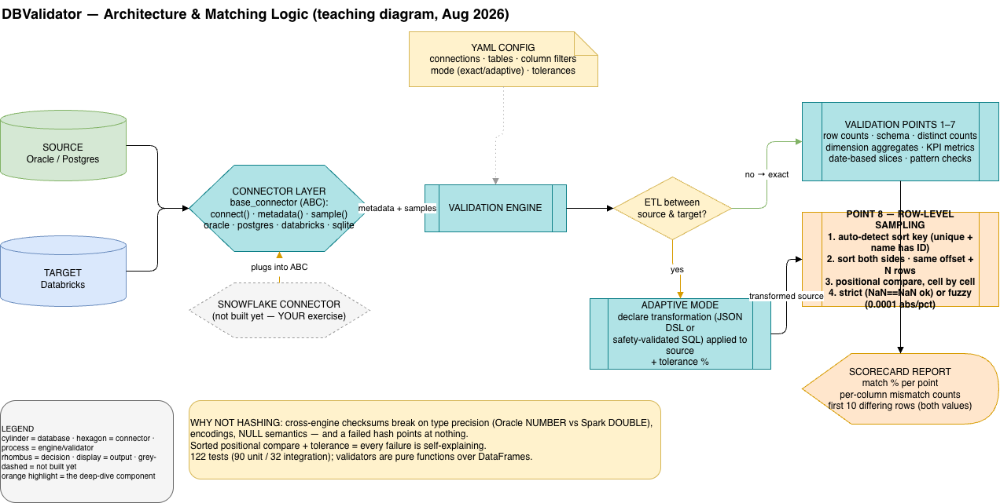

Multi-Platform Database Validation Tool
A lightweight Python CLI tool I built to validate and compare datasets across heterogeneous databases — Oracle, Snowflake, Databricks, PostgreSQL, SQLite, MySQL — with one YAML config and four validation modes covering everything from exact-row replication to ETL aggregations. It started as the thing I wished I'd had on every data-migration engagement: a repeatable, version-controlled way to answer “did the data land?” without writing a fresh notebook every time.
Every data-migration project I've been on has the same last-mile problem. The pipelines get built, the cutover date is booked, and then somebody has to prove — table by table, column by column — that the data in the target matches the data in the source. That somebody usually ends up writing a fresh set of SQL diff scripts in a notebook, forgetting to save them, and re-doing the whole exercise three sprints later when the upstream team asks “can you re-run that comparison?” The scripts rarely survive the engagement that produced them.
I wanted a tool that captured the method, not just the result. Repeatable from a YAML file, runnable by the next engineer without me standing over their shoulder, with detailed enough failure output that “row counts differ” tells you which rows, not just that they do. The four modes are the four real scenarios I kept seeing on the ground: exact match for compliance-grade replication, selective match when you need to skip audit columns or filter rows, DQ rules for the format drift (case, whitespace, timestamps), and adaptive for the real ETL case where the target schema and row counts are supposed to differ because transformations happened in flight.

End-to-end architecture: pluggable connectors (abstract base class) feed the validation engine, which routes through exact or adaptive mode into the eight validation points — row-level sampling (deterministic sort + positional compare, not hashing) highlighted.
One CLI entry point, one YAML config, a small connector layer, and a validator engine that runs the same eight checks regardless of mode. Source and target databases are abstracted behind a single BaseConnector interface, so adding Oracle or Databricks is one connector class, not a refactor. The eight validators are independent modules — each owns one check (schema, row count, distinct count, dimensions, KPIs, dates, patterns, sampling) and writes to a shared report the CLI renders as console output and JSON.
One YAML config drives the whole run. The two dark nodes are the source and target connectors behind a shared BaseConnector abstraction; the eight inner tiles are independent validator modules whose strictness is dialed by the chosen mode. Adding a database platform = one new connector class.
DB Validator is a comprehensive validation framework designed to validate data migrations and ETL processes across different database platforms. It provides 8 validation points with detailed reporting and supports both single-table and batch validation modes.
git clone <repository-url>
cd dbvalidator
pip3 install pandas click
# For database validation (optional)
pip3 install psycopg2 # PostgreSQLThe modern way - Configure once, validate all tables:
# 1. Create YAML configuration
cat > config/my_validation.yaml <<EOF
databases:
source:
type: postgresql
host: localhost
database: dbvalidator_source
target:
type: postgresql
host: localhost
database: dbvalidator_target
table_pairs:
- name: Customer Data
source: { table: customers, schema: public }
target: { table: customers, schema: public }
validation_mode: exact_match
EOF
# 2. Validate configuration
python3 code/python/main.py validate-config --config config/my_validation.yaml
# 3. Run all validations
python3 code/python/main.py run --config config/my_validation.yamlChoose the validation strategy that fits your data migration scenario:
| Mode | Row Count | Structure | Use Case |
|---|---|---|---|
| 1. Exact Match | Same | Same | Exact replication, compliance |
| 2. Selective Match | Same | Same | Skip audit columns, filter rows |
| 3. DQ Rules Engine | Same | Same | Handle format differences (case, whitespace) |
| 4. Adaptive Mode | Different | Different | ETL transformations, aggregations |
Status: All 4 modes are fully implemented and production-ready!
Used by all 4 validation modes above:
Extract table lists and metadata from databases - no Java/JDBC required!
dbvalidator/
├── code/
│ └── python/
│ ├── main.py # CLI entry point
│ ├── metadata_extractor_cli.py # Metadata extractor CLI
│ └── dbvalidator/
│ ├── config/ # YAML configuration system
│ ├── validators/ # 8 validation modules
│ ├── connectors/ # Database connectors
│ ├── core/ # Core utilities
│ └── utils/ # Utilities & metadata extractor
├── config/
│ ├── examples/ # 6 production-ready YAML examples
│ └── *.yaml # Configuration files
├── tests/ # Test infrastructure (122 tests)
│ ├── unit/ # Unit tests (90 tests)
│ └── integration/ # Integration tests (32 tests)
├── demo/ # Demo dataset (8 tables, ~209K rows)
└── documentation/ # User guidesThe first-principles takeaway: “the data matches” is not a single boolean; it's eight booleans scoped to a row-count tolerance. Most validation scripts I'd seen before this answered the question once — “counts are the same, we're done” — and missed every interesting failure (a column silently uppercased, a date truncated to day, a KPI drifting 2% inside the same row count). Splitting the question into eight independent checks, each with its own pass/fail, is what made the report actually useful to a migration lead.
Second lesson: mode selection is the user's real intent, not a settings detail. The four modes (exact, selective, DQ, adaptive) map directly to the four real scenarios I kept encountering on engagements. Once the mode was explicit in the YAML, the engine could relax the right checks for the right scenario — adaptive mode expects row-count drift because the ETL aggregates; trying to validate that with exact-match logic is what produces the false-positive noise that makes people stop trusting the tool.
Third: the connector abstraction is where multi-platform actually lives. A new database platform is one BaseConnector subclass with four methods, not a refactor. That's the difference between a tool that claims to be multi-platform and one where adding Oracle next to Postgres is genuinely an afternoon.
Fourth, the least glamorous and the one I'd push on most: 122 tests is the feature, not the changelog. Validation tooling is the kind of code where a silent regression — the distinct-count check no longer fires on nullable columns — is catastrophic, because the user trusts the green check. The 90 unit + 32 integration tests are the only reason I can ship a new mode without flinching.
Python 3, CLI-first (click). Connectors are pure-Python native drivers (psycopg2, sqlite3, oracledb, databricks-sql-connector) — no Java/JDBC dependency, no JVM, no JAR files. YAML for configuration. pandas for the comparison frame. pytest for the 122-test suite (90 unit + 32 integration). Cloud-portable across AWS RDS, Azure Database, and GCP Cloud SQL by virtue of using standard drivers. Snowflake and MySQL on the roadmap via the same connector contract.
The tool runs against customer databases with real schemas, so connection strings and dump samples stay private. The architecture, mode definitions, eight-point validator contract, and connector pattern above represent the production system end-to-end. The demo dataset bundled with the project (8 tables, ~209K rows) is what every regression test runs against. Reach out via the portfolio contact page if you'd like a walk-through against your own migration.